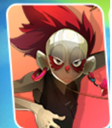
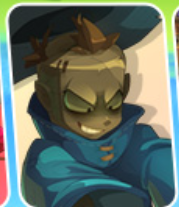
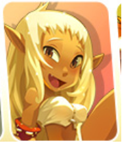
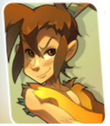
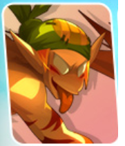
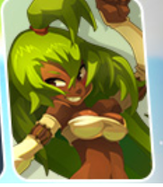
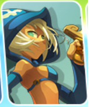

|

Membres d’un clan créé à l’origine par Raval et la famille Smisse,
les Roublards ont finalement prêté allégeance au dieu Dralbour,
qui n’est autre que Sram. Maîtres de l’entourloupe, du coup fourré,
des bombes à retardement et des pistolets… les Roublards ne sont à l’aise qu’en terrain miné.
|

Les Xélors sont des mages qui maîtrisent le temps et toutes les mécaniques qui donnent l'heure :
carillons, horloges, et pendules leur obéissent au doigt et à l'œil.
Les Xélors jouent donc avec le temps pour ralentir un ennemi ou se téléporter où bon leur semble.
|

Les Eniripsas sont des guérisseurs qui soignent d'un simple Mot.
Ils utilisent le pouvoir de la parole pour soulager les souffrances de leurs alliés, mais parfois aussi pour blesser leurs ennemis.
Certains Eniripsas sont même devenus de véritables arpenteurs du verbe, des rôdeurs des langues oubliées.
|

Les Crâs sont des archers aussi fiers que précis ! Ils font des alliés précieux contre les adeptes de la mêlée franche.
Restant à distance,
décochant leurs traits empennés dans le moindre orifice laissé sans surveillance, ils ne laissent aucun répit à leurs adversaires !
|

Les Enutrofs sont des chasseurs de trésor avides de kamas,
qui malgré leur grand âge courent comme des dragodindes à la vue d'un coffre bien rempli.
Ils sont experts dans l’art de ralentir leurs ennemis :
ils peuvent ainsi les harceler avant de les assommer à grands coups de pelle le moment venu !
|

Les Fécas sont de loyaux protecteurs toujours sur la défensive.
Ils sont appréciés dans les groupes d'aventuriers pour leurs armures élémentaires et leur capacité à encaisser les coups durs.
Ils sont également maîtres dans l’art des signes magiques :
quand il va y avoir du grabuge, les Fécas sortent leurs glyphes !
|

Les Iops sont des guerriers fonceurs et sans reproche ! Une chose est sûre : les Iops savent faire parler les armes.
D'ailleurs, se retrouver pris dans une bagarre au moins une fois par jour est pour eux un signe de bonne santé.
Leur tempérament impétueux fait des Iops des paladins de l'extrême, capables du meilleur... comme du pire !
|

Les Osamodas sont des dompteurs nés ! Ils ont le pouvoir d'invoquer des créatures et sont de remarquables dresseurs.
Une rumeur prétend qu'ils taillent leurs vêtements dans la peau de leurs ennemis, mais allez donc leur demander ce qu'il en est…
Si vous êtes de son côté, un Osamodas sera aux petits soins pour vous.
Dans le cas contraire, peut-être terminerez-vous votre vie sous la forme d'une botte ou d'un bonnet fourré.
|

Les Pandawas sont des guerriers adeptes des arts martiaux qui savent faire des folies de leurs corps !
Ils peuvent même en faire avec le corps des autres… Le Pandawa sait comment soulever les foules, il porte ses alliés sur ses épaules pour mieux les protéger.
Quant à ses ennemis, il les enverra valser dans le décor, avant de fêter sa victoire avec une bonne rasade de lait de bambou !
|

Les Sacrieurs sont des berserkers qui décuplent leurs forces dès qu'ils sont frappés !
N'ayant pas peur de recevoir des coups, ni de s'exposer aux blessures, ils seront souvent en première ligne, prêts à verser le premier sang !
Le Sacrieur est vraiment le compagnon idéal pour vos longues soirées guerrières…
|

Les Sadidas sont des invocateurs qui empoisonnent la vie de leurs ennemis !
Apprivoiser les Ronces pour en faire des armes terrifiantes,
confectionner des poupées de guerre et de soins, voilà qui satisfait tout disciple Sadida digne de ce nom.
|

Les Srams sont des assassins qui aiment les bourses, rebondies de préférence.
Trousser les pans d'une tunique, tâter le fond d'une poche, faire preuve de doigté,
palper enfin des bijoux tant convoités avant de poser un piège ou d'asséner un coup mortel,
voilà la vie d'un disciple de Sram !
|
Liste des personnages :
- Roublard
- Xelor
- Eniripsia
- Cra
- Enutrof
- Feca
- Iop
- Osamodas
- Panda
- Sacrieur
- Sadida
- Sram